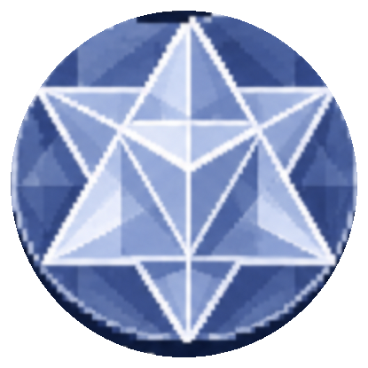
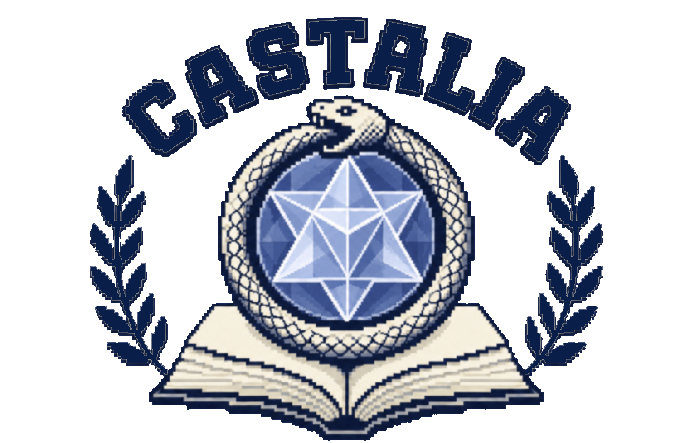
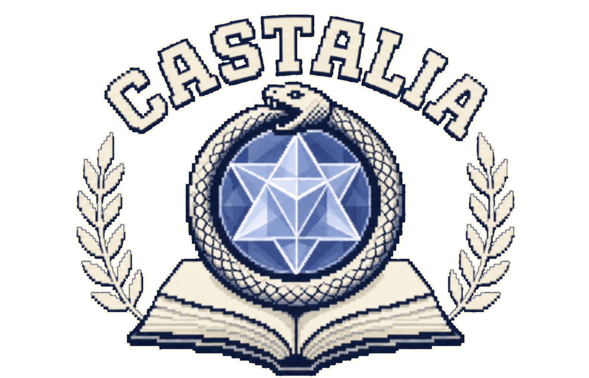
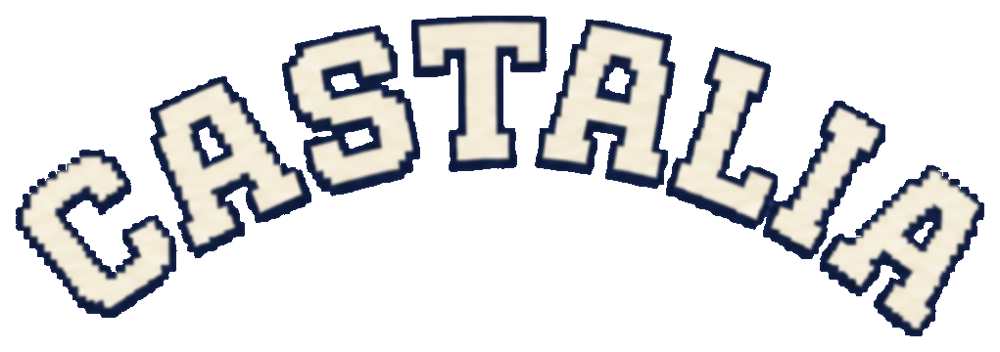

Castalia identity system · surface proof A.1
One crest,
seven working modes.
Every draft is derived from the approved transparent master. The system adapts the mark to scale, contrast, substrate, and production limits without merging the olive branches into the ouroboros or changing the crest’s anatomy.




The gem owns the smallest sizes.
Switch from the full crest to the compact mark below 96 px. Below 32 px, commission a manually simplified pixel master before production use.
128 px
64 px
32 px